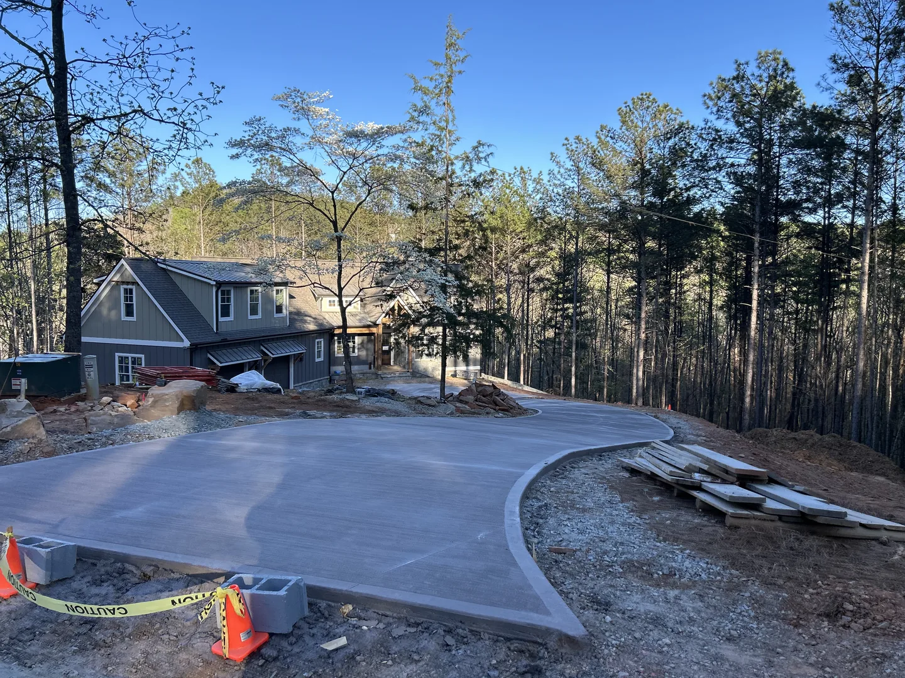
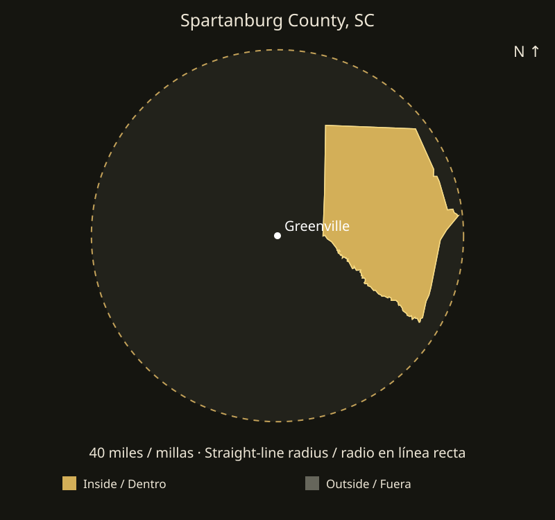

Driveway additions
For a driveway extension, identify the existing edge and the space you want to add. Photos from the street and the house help show vehicle access and how the new area will connect.
Plan your concrete driveway, slab or patio in Spartanburg County, SC with EBC Construction. Landscaping, pavers and welding are also available for project review.
Request a free estimateExtra driveway space, a backyard patio and a slab for a planned project have different needs. EBC serves Spartanburg County from its Greer base. Tell us the intended use and the site conditions so we can review the preparation, layout and finish appropriate for your request.
For a driveway extension, identify the existing edge and the space you want to add. Photos from the street and the house help show vehicle access and how the new area will connect.
Explain what the slab or patio will support and how you plan to use it. Share available project plans and dimensions so requirements can be reviewed before the concrete scope is agreed.
The project review includes access for equipment, the existing ground, removal work and the desired finish. Grading and excavation are coordinated as part of preparation when needed.

For projects in Spartanburg or Boiling Springs, send the address and mark the proposed corners in a photo if possible. Tell us about narrow gates, slopes and any existing surface to remove. If you have more than one area, list each with approximate dimensions so we can review the work sequence and estimate each part clearly.
See EBC projectsInclude the other parts of your project in the same request. Explore the service pages for the details and photos to send.
Paver patios and walkways, landscape improvements and yard preparation can be planned with your concrete work. Identify the areas and preferred materials in your request.
Explore landscaping & paversSend a full photo and close-ups of the piece, its measurements and intended use. We review materials and condition before confirming the welding work.
Explore weldingYes, we review requests in Boiling Springs and Spartanburg County. Send the exact project location so we can confirm availability and coordinate a site visit.
Include dimensions, intended use, photos and any available plans. The final scope depends on the project requirements and site review; dimensions alone do not determine every detail.
Yes. Add photos of the piece, its intended use and the material if known. We review the welding request alongside concrete, pavers or landscaping and confirm what can be included.
Include your address, photos, approximate dimensions and preferred timing. EBC confirms the scope and availability before scheduling work. Estimates and project visits are arranged directly with our team.
Also serving nearby areas:
Greenville County
The nearest part of Spartanburg County is approximately 9.78 straight-line miles from downtown Greenville. About 100% of the county area falls inside the 40-mile circle.
Coverage is limited to addresses within 40 miles of downtown Greenville in a straight line. Driving distance may be longer. EBC reviews the address, access, scope and availability before confirming a project.
Send your locationSend your address, photos, approximate measurements and preferred timing. Message EBC in English or Spanish to request an estimate.